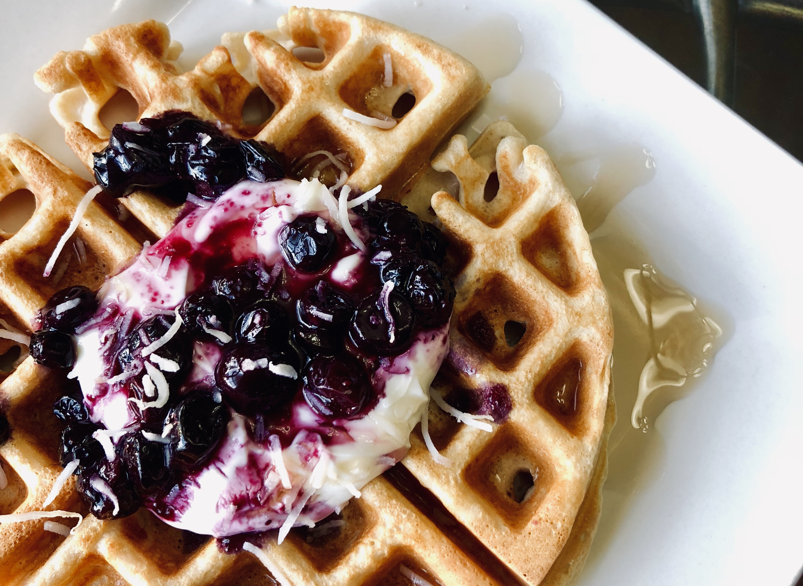

October 28, 2018
How to Breakfast in 10 minutes
People say breakfast is the most important meal of the day. But sometimes *cough cough* many times we kind of don't do it justice. After many trials and tribulations - waking up earlier, buying breakfast everyday, saying f- this crap and skipping breakfast - I have found a routine that I'm comfortable with and maybe you might be too. So read on foodies. Here's my guide to how to have bomb af breakfast in 10 minutes or less.
> Step 1:Plan, Plan, Plan
Stop. I see you picking up that egg out of the fridge. Before you do anything, plan your meals. Create a menu for yourself; it can be as specific as what you're going to have each day of the week or as a broad as a list of options you'll chose from depending on what your heart stomach desires that morning. I usually do this on a week by week basis.
> Step 2:Shop
Now that you have an idea of what you're going to eat, you can go to the grocery store and buy what you need. Emphasis on what you need. We're balling on a college budget, so let's try not to spend innecessary amounts of money on food with pretty packaging that ends up collecting dust in our pantries. #guilty. I usually make a shopping list and stick to it. I'll only stray from it if I really really really am convinced by its packaging.
> Step 3:Prep
This is where the time saving magic happens. The trick to making time in the mornings when you're in a rush to get out the door is to do the opposite: don't do it. If you really don't have time to make breakfast in the morning, the answer is simple. Don't do it. Instead, prep your breakfast the night before. Kim, how exactly do I do that? Prep things that are what meal preppers call "refrigderator/freezer friendy". These are meals that are quickly prepared and left in the fridge or the freezer to actually eat the day after or even the week after depending on what it is. Here are some ideas.
Overnight Oats and Chia Pudding
These are my go-to breakfast. They're so easy to make and most importantly they taste damn good and are packed with nutrition. Overnight oats is basically oatmeal that you didn't cook. By letting the oats soak in liquid like milk or yogurt overnight, the oats soak up the moisture and expand as if you had cooked them in the microwave or stovetop. Chia pudding is the exact same concept but instead of oats, you're soaking chia seeds. What I love about these is that you can make it pretty much any flavor you would like by mixing in different fruits, spices, and other toppings. Just shove all the good shit you want in a mason jar, pop it in the fridge, and in the morning you'll have a jar of deliciousness. The recipe that I use are here. But note that the recipes are flexible! For me, the yogurt adds extra creaminess and packs in much needed protein after a morning workout. But you can experiment with the ratio of milk and yogurt depending on what you like, how thick you want your pudding. You can even just use milk if you'd like.
Overnight Oats/ Chia Pudding
- 1/2 cup plain nonfat Greek yogurt
- 1/2 cup unsweetened almond milk
- 1/2 cup rolled oats OR 3 tbsp chia seeds
- 1 tsp vanilla extract
- 1/2 tsp cinnamon
- 1-2 tsp sweetner of choice - honey, maple syrup, agave, etc.
Combine all the ingredients listed above as well as fruit of choice - strawberries, blueberries, bananas, apples, pear, etc. - in a mason jar and let sit overnight. In the morning, feel free to top your breakfast with granola, nuts, coconut flakes, nut butter, etc.
Freezer Ready Breakfast burritos and sandwiches
McDonald's Egg Mcmuffins. Meet your match. These breakfast sandwiches are healthier and just as tasty! The best part is, you can make them in bulk and freeze them and throughout the week, just pop them in the microwave. For the sandwiches, layer a turkey sausage patty, a slice of low fat cheese, and eggs on a whole wheat english muffin. Tip: to get that "egg Mcmuffin" egg, rather than scrambling your eggs bake them in a muffin tin! Just crack an egg and some egg whites into each tin and bake them for 10-15 minutes or until firm. For the burritos, scramble some eggs with your favorite vegetables - tomatoes, spinach, onions, peppers, etc. - some cheese and if you want turkey sausage or lean ham for extra protein. Wrap up the burritos and you're set.
Waffles or Pancakes...or both?
If you're looking for a more traditional breakfast, you'll love this option. I love Kodiak Cake's Pancake/Waffle mix. All you have to do is add water or milk and you have a delicious and nutritious breakfast packed with protein. I have a waffle machine at home so I just pour the batter into the machine and I'll have a big, fluffly waffle in about 5 minutes. If you don't have a waffle machine, you can make a large batch of batter, flip some pancakes on a griddle or non stick pack and like the breakfast sandwiches, freeze them and heat them up throughout the week.
> Step 4:Forget about the time
Kim I'm in a rush in the mornings. What can you possibly mean by that? Whether you wake up at 5 AM or 12 PM, learn to nourish your body as soon as you wake up! A lot of us have the mind set "Oh I wake up at 6 am, it's too early for breakfast." Your stomach doesn't know the time! It just knows food! Think about it, when we wake up, we haven't had a meal since dinner the day before. That's about 8 hours without eating anything, possibly more. So, do your body a solid and nourish it!
> Step 5:Grab, Go, and Enjoy
This is the best part of the process. Let a great breakfast set the tone for the rest of your day!
Search...